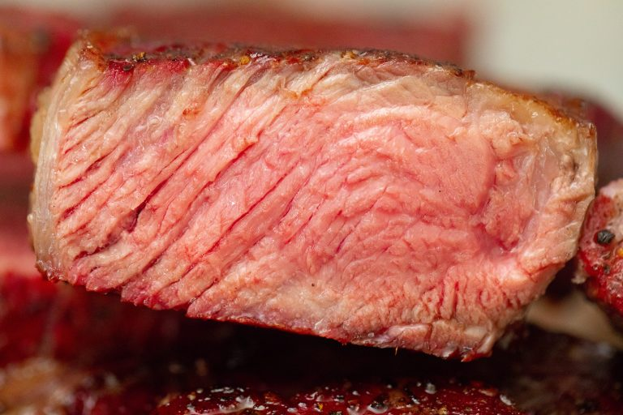

Smoked Steak

Smoked steak is an incredibly delicious way to prepare steak.
The steak comes off the grill juicy and full of flavor.
You don't need to get fancy with seasonings, as the smoke does most of the work for you.
INGREDIENTS
- 4 1 1/2 inch steaks ((New York strip, tenderloin, and rib eye are all great options))
- Kosher salt (to taste)
- fresh cracked pepper (to taste)
INSTRUCTIONS
- Preheat smoker to 225 degrees F with your wood of choice.
- Use a paper towel to pat you steaks dry on all sides. Season on all sides with kosher salt and cracked black pepper.
- Place your steaks on the smoker, close the lid, and smoke until the internal temperature of your steak reaches 115 degrees F (for rare steak), 125 (medium rare), 135 (medium), 145 (medium well), or 155 degrees F (well done).
- Remove the steaks from the grill and set them aside while you preheat a 12" cast iron skillet over high heat.
- Lightly coat the bottom of your skillet with a high heat oil (like avocado oil). Place the steaks in the pan and sear for approximately 2 minutes per side. Cook until the internal temperature of your steak reaches your desired doneness: 125 degrees F (rare), 135 (medium rare), 145 (medium), 155 degrees (medium well), or 165 degrees F (well done).
- Remove your steaks from the skillet and allow the steak to rest for 10 minutes. Serve with an additional sprinkle of salt, if desired.
Back